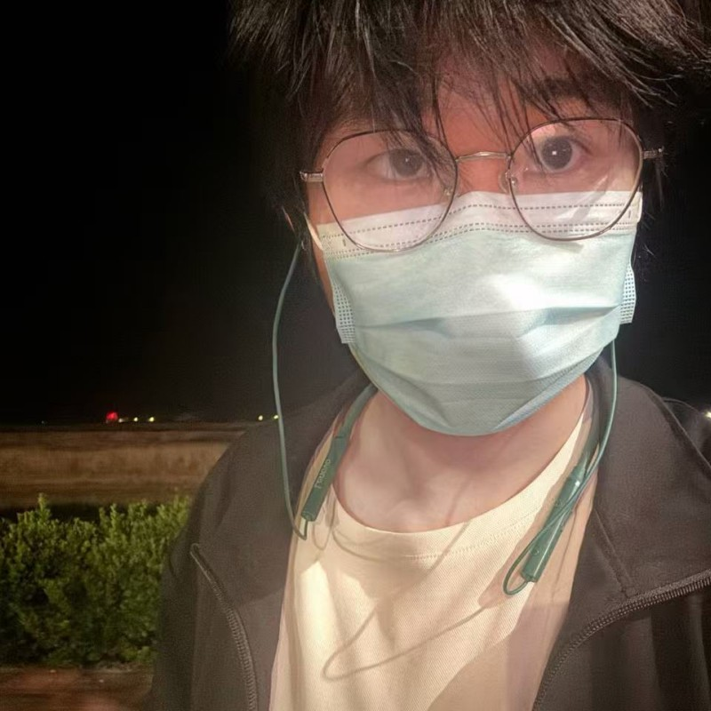

Studying IoT Engineering at Hebei University of Technology
Studying Computer Science at Massey University
Technical Co-founder (Part-time) at Tianjin Nansu Technology
Hi!👋 I'm Xinru Xue, an undergraduate student studying Internet of Things Engineering at Hebei University of Technology and Computer Science at Massey University. I began my studies at Hebei University of Technology in September 2023 and at Massey University in February 2024, with graduation from both programs expected in June 2027. My average grade at Hebei University of Technology is 88.37/100.
My coursework includes applied and object-oriented programming, sensor technology and applications, algorithms and data structures, operating systems, computer networks, IoT communication technology, and systems analysis and modelling. These subjects support my work in embedded systems, sensing, and software-hardware integration.
Since February 2021, I have worked as a Technical Co-founder (Part-time) at Tianjin Nansu Technology Co., Ltd. My responsibilities include early-stage architecture planning and solution deployment, building IT infrastructure for multi-user office and warehouse systems, maintaining production equipment, and procuring and optimizing computing systems. I have also developed 3D models and Unreal Engine 4-based games for technical validation and demonstrations.
From January to February 2026, I completed an electrical design internship at China Petroleum Pipeline Engineering Corporation, Tianjin Branch. I assisted with power distribution system design, produced drawings using CAD and EPLAN, and organized project documentation.
From February 2025 to January 2026, I worked as a part-time Assistant Lecturer at Tianjin Engineering Vocational Technical College. I assisted with C and Java programming classes, graded assignments, guided lab sessions, answered student questions, and helped organize teaching materials and classroom activities.
In July and August 2025, I was an Operations and Maintenance Intern at the Digital Intelligence Technology Company of Dagang Oilfield (News & Culture Center). I supported business system troubleshooting and performance monitoring, inspected equipment and networks, recorded operational status, and reported potential risks. I also assisted with system updates, patch installation, configuration optimization, and data backup and recovery testing.
Since June 2025, I have led a team developing a low-power human activity recognition system with multi-sensor fusion based on ESP32-S3. My work covers system architecture, sensor fusion strategy, data processing workflows, embedded firmware development using C/C++, Arduino, and ESP-IDF, human activity recognition algorithms, and experimental analysis.
I am also working on an individual project, a low-cost visual obstacle avoidance system based on lightweight object detection, which I began in June 2025. I have trained and optimized a lightweight YOLOv5 model, deployed it to edge computing devices, and integrated it with microcontroller-based time-of-flight (ToF) triggering. The project also involves system integration and performance testing.
Outside my coursework, I have served as Head of the E-sports Club at Hebei University of Technology since July 2024. I manage daily club operations, coordinate members, and organize on-campus and off-campus events, including logistics and on-site execution. From July 2023 to September 2024, I was also a Student Union member, helping plan campus events, festivals, and orientation activities while coordinating resources and resolving on-site issues.
In June and July 2025, I participated as a team member in the China International College Students' Innovation Competition, its International Division, and the iCAN International College Students' Innovation & Entrepreneurship Competition (Innovation Track). I contributed to project ideation, solution design, functional prototypes, technical implementation, documentation, feasibility analysis, and presentation preparation. The international division also gave me experience in cross-cultural collaboration and adapting technical presentations for an international audience.
My technical skills include C and C++. I am a native Chinese speaker and use English in my studies and teamwork, with an IELTS overall score of 6.5. Across my academic projects and practical experience, I focus on connecting sensing, embedded programming, and software systems.
View my updated CV here.
Feedback from academic mentors, industry collaborators, and community leaders.